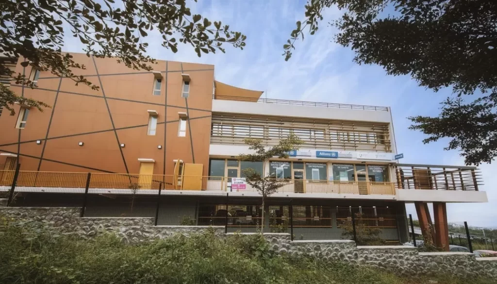

Immobilier d'exception · La Réunion
L'exigence.Notre signature.
30 ans d'expertise locale. Biens rares, accompagnement sur mesure, résultats durables.
Immobilier d'exception · La Réunion
30 ans d'expertise locale. Biens rares, accompagnement sur mesure, résultats durables.
Sélectionnés pour vous

Résidence contemporaine au cœur d'un quartier recherché, à deux pas des commodités.
Découvrir
Maisons d'exception entre nature et modernité, pensées pour le confort au quotidien.
Découvrir
Un emplacement stratégique pour vos projets professionnels et mixtes.
DécouvrirNotre histoire
Depuis 2004, Koytcha Immo accompagne ses clients avec la même exigence et une parfaite connaissance du marché réunionnais.
Notre approche repose sur l'écoute, la transparence et la recherche constante de la meilleure solution pour valoriser chaque projet.
De l'investissement à la gestion patrimoniale, nous bâtissons des relations durables fondées sur la confiance.


Plus qu'un lieu, une expérience. Découvrons ensemble le projet qui vous ressemble.
Contactez-nous